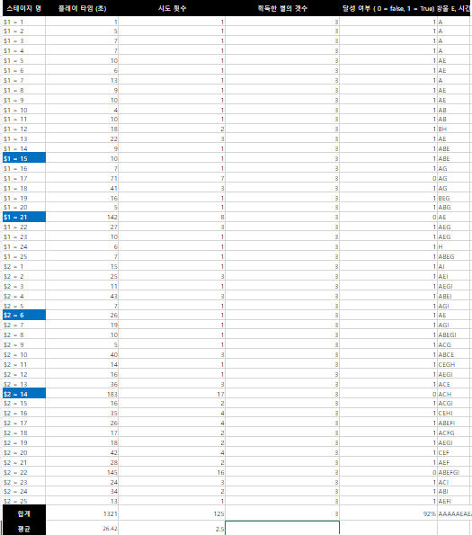
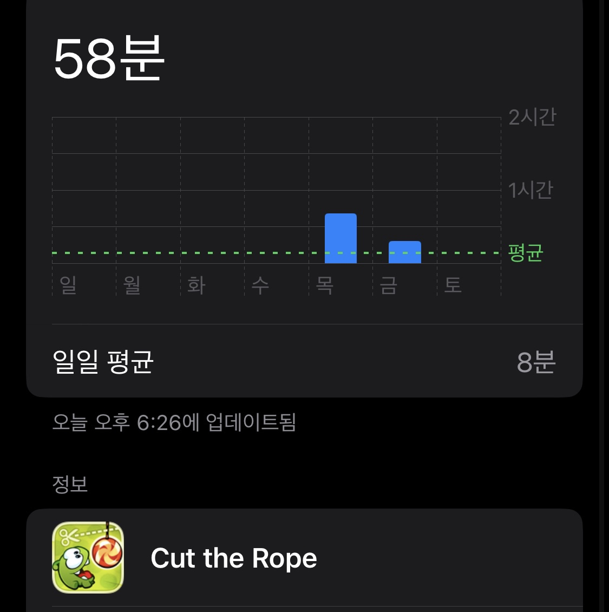
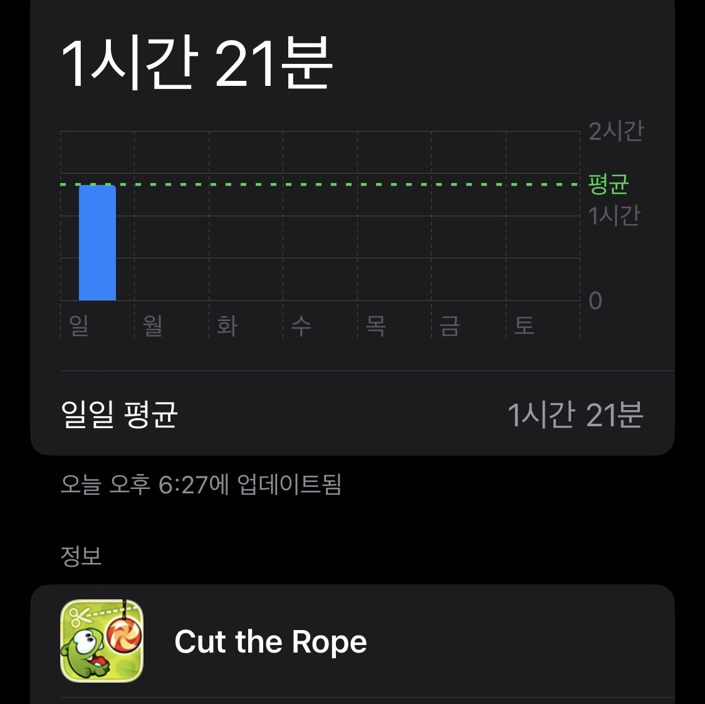
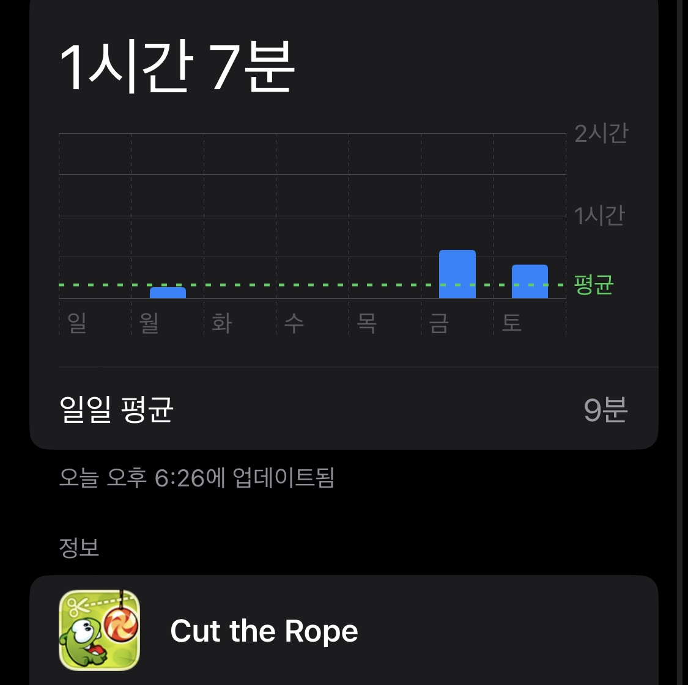
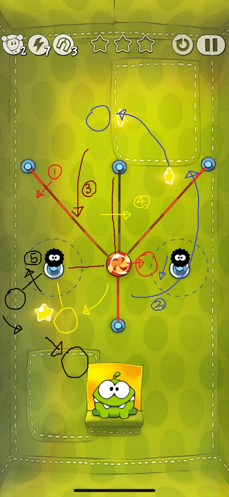

3. 게임 플레이 기준
- 스테이지 목표 :
별을 2개 이상 획득 및 5회 이내로 클리어
- 게임 전체의 목표 :
"은박지 상자" 스테이지 (3스테이지) 해금 및 별 3개 획득한 스테이지 30개 이상
플레이 중 기록 요소
- 스테이지 당 시도 횟수
- 스테이지 당 소모 시간
- 스테이지의 목표 달성 여부
- 획득한 별의 갯수
- 등장한 기믹
목표 선정의 이유
게임이 처음 출시 되었을 때엔 스테이지 3 까지만 존재하였었기에 개발자의 초기 의도를
분석하기 위해 스테이지 3 까지 클리어 하여 내용을 분석하고 그 의도를 파악하기
위함과, 스테이지 3 즈음에 대부분의
기믹들과 앞으로 나올 기믹들의 기본이 될 기믹들이 해금되며, 이를 분석하기 위해서 스테이지 3 까지 도달 하는 것을 목표로 함.
평가 방법
- 한 스테이지에 존재하는 기믹들을 확인하고 시간을 잰다.
- 그 후로, 그 스테이지를 클리어 할 때 까지 반복한다.
- 클리어 할 때 까지 재시도를 한 횟수와 소요된 시간을 확인하고 기록한다.
- 게임 전체 목표가 달성 될 때 까지 이를 반복한다.
4. 게임 플레이 기록

총 기록 시간 : 1321초 (22분 1초)
스테이지 당 평균 소요 시간 : 26.42초
스테이지 당 평균 시도 횟수 : 2.5회
가장 많이 시도한 스테이지와 횟수 :
17회 / 2-14
스테이지 목표 달성률 : 92%
가장 많이 등장한 기믹 : 방울 / 28회
가장 적게 등장한 기믹 :
시간 제한이 있는 별 / 6회
스테이지 1-1 부터 2-25까지
클리어 후의 기록



▶ 총 플레이 타임 : 약 3시간
5. 게임 분석
이번에 플레이한 "Cut the Rope" 는, 스테이지로 구성되어있는 게임이며, 다양한
오브젝트들과의 상호작용과 물리엔진들을 활용해 퍼즐을 풀어내는 것이 주가 되는
게임이다. 이러한 게임의 특성 상 스테이지 마다 난이도가 서로 상이하며, 그렇기에
스테이지 몇 개를 공략하며 게임을 분석하려 한다.

스테이지 1-21
일단 스테이지를 보면 스테이지에 방울이 총 2개,
밧줄이 총 4개가 보인다. 밧줄 중 2개는 도넛이
더 이상 위로 올라가지 못하도록 잡아주고 있다.
이 스테이지의 공략은
- 왼쪽 아래에서 붙잡아주고 있는 밧줄을 끊어
도넛을 오른쪽 위로 보내어 첫 번째 별을
획득한다.
- 오른쪽 아래에서 붙잡아주던 밧줄도 끊어
도넛이 다시 가운데로 올 수 있게 한다.
- 남은 밧줄 2개도 끊어 버려 도넛이 위로
올라갈 수 있게 하여 2번째 별을 획득한다.
- 도넛이 너무 올라가 게임이 클리어 되기 전에
방울을 터뜨려 도넛을 밑으로 떨어뜨린다.
이후 관성에 의해 도넛이 방울로 들어가면서
마지막 별 까지 획득하고 다시 위로 올려보내
게임을 클리어 한다.
다음과 같이 진행된다.
이 스테이지에서 미루어 보았을 때, Cut The Rope는 우리가 흔히 퍼즐이라하면 떠올리는 스도쿠, 직소퍼즐 등과는
다르게, 관성과 물리엔진을 활용하고, 퍼즐의 공략에 있어서 "타이밍" 이라는 요소도 적지 않는 비중을 차지하는
새로운 타입의 퍼즐 게임이라고 할 수 있을 것 같다. 하지만 앞서 말했듯, 이 게임은 스테이지마다 등장하는 요소들이
서로 상이하며, 따라서 다른 스테이지들도 살펴보며 게임을 조금 더 분석해 보려고 한다.
5. 게임 분석

스테이지 2-14
이번에도 스테이지를 살펴보는 것부터 시작한다.
이 곳에서도 밧줄이 총 4개가 보이지만, 한 가지
특이한 점은 팽팽하게 연결된 밧줄이 3개나
있다는 것이다. 또 맵에 거미가 2마리 보인다.
이 스테이지의 공략은
- 왼쪽에서 잡고 있는 밧줄을 끊는다. 이때,
밧줄을 끊은 반동으로 오른쪽에 있는 거미와
연결되게 된다.
- 거미를 먼저 끊어 놓고 진행해도 좋고, 아니면
한 번에 끊어도 좋다. 밑에 있는 밧줄에서
시작해서 오른쪽 위의 밧줄까지 원호를 그리며
자른다. 이때, 중앙에서 잡아주는 밧줄은
자르지 않도록 한다.
- 아래쪽에서 잡아주던 밧줄을 자른 반동으로
도넛이 오른쪽 위로 튀어나가게된다.
이때, 중앙의 밧줄에 의해 원호를 그리게 되며
첫 번째 별과 두 번째 별을 획득 한다.
-
이후 왼쪽 거미와 연결되며 두 밧줄이
직각을 이루게 되며, 중앙과 연결된 밧줄을
끊어 왼쪽 거미가 있던 압정을 중심으로
진자 운동을 하게한다.
- 도넛이 올라갔다 내려오는 타이밍에 맞추어
밧줄을 잘라 관성으로 암냠에게 날아갈 수
있도록 한다.
다음과 같이 진행된다.
결론
Cut The Rope는 퍼즐 게임으로서 혁신적이였다고 말할 수 있다. 보통 "퍼즐 게임" 하면 직소퍼즐이나 스도쿠 같이 정적인 게임을
주로 떠올리기 마련이다. 하지만, Cut The Rope는 정말 지금까지 나온 기술들을 잘 활용하여 게임에 "움직임" 을 불어넣었다.
기존 퍼즐게임의 루즈하다는 단점을, 시간제한이 있는 별이나 거미 등의 요소를 활용해 게임의 템포를 끌어올렸으며, 물리엔진과
관성 등으로 게임에 정말 집중하지 않으면 클리어 할 수 없는 기믹을 넣어 게임에 더더욱 집중하게 된다.
이 게임이 11년 전에 출시 되었음을 생각하면, 이 게임은 정말 "퍼즐게임에서 이런 것도 가능하다" 라는 것을 여실히 보여주는 듯 하다.
오래된 게임이니 만큼, 지금 보면 조금은 식상할 수 도 있는 게임이지만, 그렇기에 더더욱 대단한 게임이라고 생각한다.